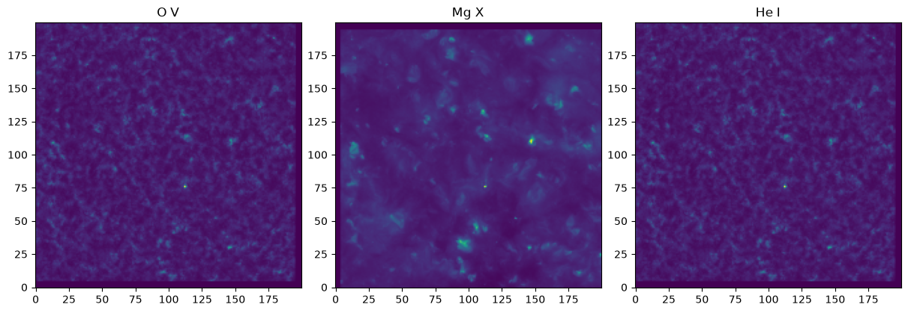
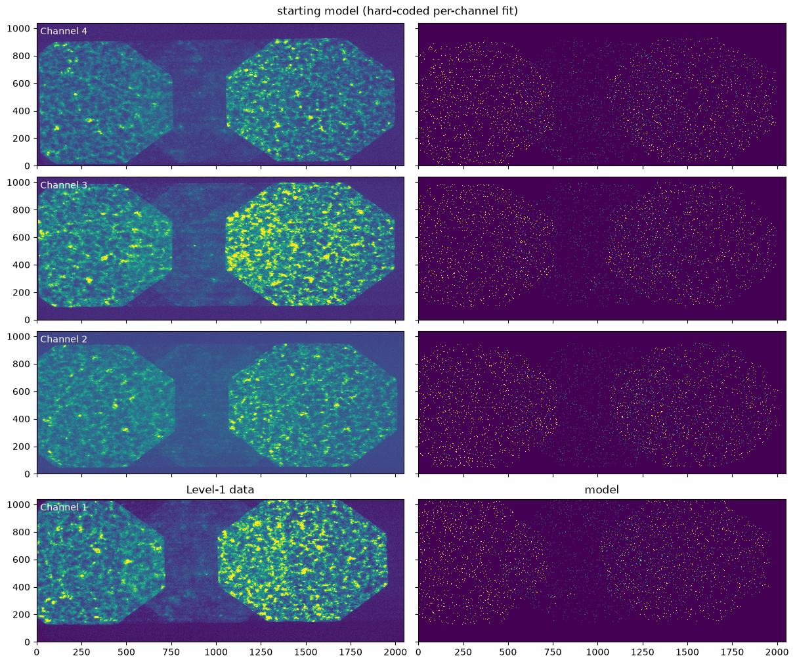
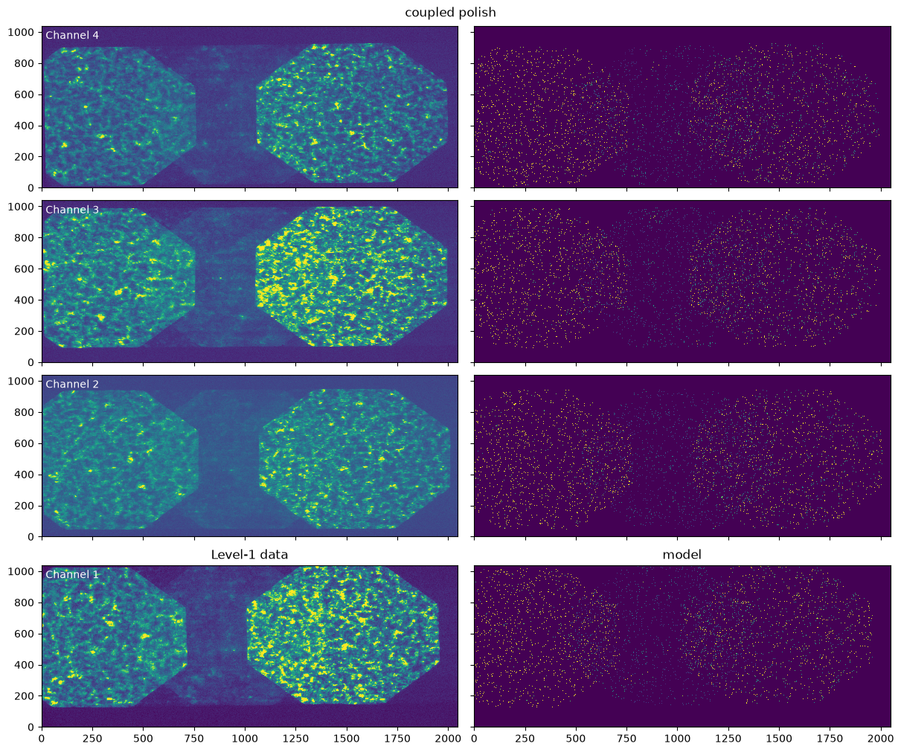
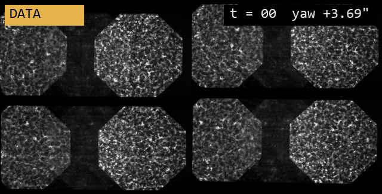

Fitting the ESIS-I distortion#
This notebook fits the alignment/distortion parameters of the ESIS-I optical model to a Level-1 flight image, using a synthetic scene built from AIA imagery captured during the flight.
Inverting an ESIS image requires a model whose distortion mapping — where each point on the Sun lands on each of the four detectors — matches the real instrument. Metrology alone does not pin the alignment down precisely enough, so we recover it by adjusting the model’s distortion parameters until the modeled image reproduces a real Level-1 frame.
It starts from the per-channel best fit recorded in esis.flights.f1.optics.distortion_fit() and performs a coupled polish of all four channels at once: parameters that correspond to a single physical part (the field stop, the primary mirror, and the pointing of the payload) are shared between the channels, while the per-grating parameters remain independent.
Requirements:
The
JSOC_EMAILenvironment variable must be set to an email address registered with JSOC (only needed the first time; the AIA scene is cached afterwards).Set
quick = Falsebelow for a production fit (hours); the default settings run a minutes-long demonstration fit.
[1]:
import dataclasses
import pathlib
from datetime import datetime
import numpy as np
import matplotlib.pyplot as plt
import astropy.units as u
import named_arrays as na
import optika
import esis
[2]:
# fast demonstration settings; set False for a production fit
quick = True
num_scene = 201 if quick else 801
Data#
Load the Level-1 frame that the original distortion fit was optimized against, and the AIA frame captured closest to it.
[3]:
time_index = 15
l1 = esis.flights.f1.data.level_1()[dict(time=time_index)]
time_esis = l1.inputs.time_start[dict(channel=0)].ndarray
time_esis
[3]:
<Time object: scale='utc' format='isot' value=2019-09-30T18:08:41.642>
[4]:
scene = esis.flights.f1.data.synth.scene_aia()
scene = scene[np.argmin(np.abs((scene.inputs.time - time_esis).mean("wavelength")))]
scene.outputs.shape
[4]:
{'wavelength': 3, 'detector_y': 1365, 'detector_x': 1365, 'velocity': 1}
Downsample the scene onto a regular grid to make the raytrace cheaper. The scene radiance is regridded conservatively so that the total flux is preserved.
[5]:
inputs_scene = na.TemporalSpectralPositionalVectorArray(
time=scene.inputs.time,
wavelength=scene.inputs.wavelength,
position=na.Cartesian2dVectorArray(
x=na.ScalarLinearSpace(
scene.inputs.position.x.min(),
scene.inputs.position.x.max(),
axis="detector_x",
num=num_scene,
),
y=na.ScalarLinearSpace(
scene.inputs.position.y.min(),
scene.inputs.position.y.max(),
axis="detector_y",
num=num_scene,
),
),
)
scene_fit = scene(inputs_scene, axis=("detector_x", "detector_y"), method="conservative")
scene_fit.outputs.shape
[5]:
{'wavelength': 3, 'velocity': 1, 'detector_x': 200, 'detector_y': 200}
[6]:
spectral_lines = ["O V", "Mg X", "He I"]
fig, ax = plt.subplots(ncols=3, figsize=(12, 4), constrained_layout=True)
for i in range(3):
index = dict(wavelength=i, velocity=0)
ax[i].imshow(scene_fit.outputs[index].ndarray.value.T, origin="lower")
ax[i].set_title(spectral_lines[i]);

Model#
Start from the hard-coded per-channel best fit and idealize the materials, so that the modeled counts are not modulated by the wavelength-dependent coating and filter efficiencies (the correlation merit is insensitive to per-channel scale factors anyway).
[7]:
model = esis.flights.f1.optics.distortion_fit(num_distribution=0)
model.grating.material = optika.materials.Mirror()
model.primary_mirror.material = optika.materials.Mirror()
model.filter.material = None
model.camera.sensor.material = optika.sensors.materials.IdealSensorMaterial()
# a single pupil cell is sufficient for distortion mapping
pupil = na.Cartesian2dVectorLinearSpace(
start=-0.25,
stop=0.25,
axis=na.Cartesian2dVectorArray("pupil_x", "pupil_y"),
num=2,
)
Starting comparison#
Render the model image and compare it against the Level-1 data.
[8]:
kwargs_image = dict(
pupil=pupil,
axis_wavelength="velocity",
axis_field=("detector_x", "detector_y"),
noise=False,
)
def render(instrument):
image = instrument.system.image(scene_fit, **kwargs_image)
axis_extra = tuple(set(image.outputs.shape) - set(na.shape(l1.outputs)))
return image.outputs.sum(axis_extra)
image_start = render(model)
image_start.shape
[8]:
{'channel': 4, 'detector_x': 2048, 'detector_y': 1040}
[9]:
def compare(image_model, title):
fig, ax = na.plt.subplots(
figsize=(12, 10),
constrained_layout=True,
axis_rows="channel",
nrows=l1.shape["channel"],
axis_cols="column",
ncols=2,
sharex=True,
sharey=True,
)
fig.suptitle(title)
data = (l1.outputs - l1.outputs.mean()) / l1.outputs.std()
na.plt.pcolormesh(
l1.inputs.pixel.x,
l1.inputs.pixel.y,
C=data.value,
ax=ax[dict(column=0)],
vmax=np.percentile(data.value, 99),
)
image_model = (image_model - image_model.mean()) / image_model.std()
na.plt.pcolormesh(
l1.inputs.pixel.x,
l1.inputs.pixel.y,
C=image_model.value,
ax=ax[dict(column=1)],
vmax=np.percentile(image_model.value, 99),
)
na.plt.text(
x=0.01,
y=0.97,
s=l1.channel,
transform=na.plt.transAxes(ax[dict(column=0)]),
ax=ax[dict(column=0)],
ha="left",
va="top",
color="white",
)
ax.ndarray[0, 0].set_title("Level-1 data")
ax.ndarray[0, 1].set_title("model")
compare(image_start, "starting model (hard-coded per-channel fit)")

Coupled parameters#
The hard-coded fit lets every parameter vary independently per channel, but several of them describe a single physical part, so their per-channel scatter is unphysical:
roll_field_stop— there is only one field stop,displacement_primary— there is only one primary mirror,pitch,yaw,roll— the payload has a single pointing.
Replace those with their channel means to form the coupled starting point. The per-grating parameters (yaw_grating, pitch_grating, roll_grating, spacing_rulings) remain independent, since each channel has its own grating. This reduces the fit from 36 to 21 degrees of freedom.
[10]:
parameters = esis.optics.DistortionParameters.from_instrument(model)
parameters.roll_field_stop = parameters.roll_field_stop.mean()
parameters.displacement_primary = parameters.displacement_primary.mean()
parameters.pitch = parameters.pitch.mean()
parameters.yaw = parameters.yaw.mean()
parameters.roll = parameters.roll.mean()
print("degrees of freedom:", na.pack(parameters).shape["pack"])
parameters
degrees of freedom: 21
[10]:
DistortionParameters(
yaw_grating=ScalarArray(
ndarray=[-269.3, -268.1, -268.7, -268. ] arcmin,
axes=('channel',),
),
pitch_grating=ScalarArray(
ndarray=[3.704, 1.522, 1.316, 5.705] arcmin,
axes=('channel',),
),
roll_grating=ScalarArray(
ndarray=[1.027 , 0.2393, 0.3678, 1.02 ] deg,
axes=('channel',),
),
roll_field_stop=ScalarArray(
ndarray=0.039975 deg,
axes=(),
),
spacing_rulings=ScalarArray(
ndarray=[0.3854, 0.3859, 0.3855, 0.3863] um,
axes=('channel',),
),
displacement_primary=ScalarArray(
ndarray=-2.5205175 mm,
axes=(),
),
pitch=ScalarArray(
ndarray=-21.1986875 arcsec,
axes=(),
),
yaw=ScalarArray(
ndarray=-17.152525 arcsec,
axes=(),
),
roll=ScalarArray(
ndarray=-0.607845 deg,
axes=(),
),
)
Polish bounds#
Since this is a polish around a known-good starting point, the bounds are tight absolute windows around the start, sized to comfortably contain the per-channel scatter of the original fit.
[11]:
delta = esis.optics.DistortionParameters(
yaw_grating=2 * u.arcmin,
pitch_grating=2 * u.arcmin,
roll_grating=0.25 * u.deg,
roll_field_stop=1 * u.deg,
spacing_rulings=5e-4 * u.um,
displacement_primary=3 * u.mm,
pitch=15 * u.arcsec,
yaw=15 * u.arcsec,
roll=0.5 * u.deg,
)
def shift(parameters, delta, sign):
return esis.optics.DistortionParameters(**{
field.name: getattr(parameters, field.name) + sign * getattr(delta, field.name)
for field in dataclasses.fields(parameters)
})
bounds = (shift(parameters, delta, -1), shift(parameters, delta, +1))
How the fit is scored#
Each trial parameter set is graded by esis.optics.DistortionObjective, which reproduces the scene through the perturbed instrument and scores the result as
correlation is the Pearson correlation between the standardized modeled and observed images. It rewards getting structure in the right place and is blind to overall brightness — which is why the idealized materials in the Model section are harmless, and why per-channel brightness differences are handled by averaging the correlation across channels (
axis_channel).off-target penalty is the squared mean ray position, which keeps the field from walking off the detector.
Lower is better. The ray trace samples photons randomly, so the merit is stochastic even with ``noise=False``; gradient-based optimizers would chase that noise, so the fit uses a derivative-free global optimizer (scipy.optimize.differential_evolution).
Coupled polish#
Fit all four channels at once. With axis_channel="channel" the correlation merit is computed independently per channel and averaged, so per-channel brightness differences in the data do not suppress it.
Convergence is logged to a timestamped directory (convergence_data.csv, full_output.log, convergence_plot.png).
[12]:
directory = pathlib.Path(
f"distortion_polish_{datetime.now().strftime('%Y%m%d_%H%M%S')}"
)
x0 = na.pack(parameters).ndarray
lower = na.pack(bounds[0]).ndarray
upper = na.pack(bounds[1]).ndarray
if quick:
rng = np.random.default_rng(42)
init = lower + (upper - lower) * rng.uniform(size=(5, x0.size))
init[0] = x0
kwargs_optimizer = dict(init=init, maxiter=2, tol=1e6, polish=False)
else:
kwargs_optimizer = dict(
popsize=10,
maxiter=200,
workers=-1,
updating="deferred",
polish=True,
)
fitted = esis.optics.fit_distortion(
instrument=model,
scene=scene_fit,
observation=l1.outputs.value,
bounds=bounds,
parameters=parameters,
pupil=pupil,
axis_wavelength="velocity",
axis_field=("detector_x", "detector_y"),
axis_channel="channel",
directory=directory,
kwargs_optimizer=kwargs_optimizer,
)
iteration 001 | energy: -9.338266e+01 | x: [-2.6930e+02, -2.6810e+02, -2.6870e+02, -2.6800e+02, 3.7040e+00,
1.5220e+00, 1.3160e+00, 5.7050e+00, 1.0270e+00, 2.3930e-01,
3.6780e-01, 1.0200e+00, 3.9975e-02, 3.8540e-01, 3.8590e-01,
3.8550e-01, 3.8630e-01, -2.5205e+00, -2.1199e+01, -1.7153e+01,
-6.0784e-01]
message: Optimization terminated successfully.
success: True
fun: -93.38265942564819
x: [-2.693e+02 -2.681e+02 ... -1.715e+01 -6.078e-01]
nit: 1
nfev: 10
population: [[-2.693e+02 -2.681e+02 ... -1.715e+01 -6.078e-01]
[-2.704e+02 -2.691e+02 ... -1.904e+01 -2.752e-01]
...
[-2.682e+02 -2.676e+02 ... -7.732e+00 -9.409e-01]
[-2.699e+02 -2.697e+02 ... -3.077e+00 -4.099e-01]]
population_energies: [-9.338e+01 -3.794e+01 -4.882e+01 -5.174e+01
-4.479e+01]
DistortionParameters(
yaw_grating=ScalarArray(
ndarray=[-269.3, -268.1, -268.7, -268. ] arcmin,
axes=('channel',),
),
pitch_grating=ScalarArray(
ndarray=[3.704, 1.522, 1.316, 5.705] arcmin,
axes=('channel',),
),
roll_grating=ScalarArray(
ndarray=[1.027 , 0.2393, 0.3678, 1.02 ] deg,
axes=('channel',),
),
roll_field_stop=ScalarArray(
ndarray=0.039975 deg,
axes=(),
),
spacing_rulings=ScalarArray(
ndarray=[0.3854, 0.3859, 0.3855, 0.3863] um,
axes=('channel',),
),
displacement_primary=ScalarArray(
ndarray=-2.5205175 mm,
axes=(),
),
pitch=ScalarArray(
ndarray=-21.1986875 arcsec,
axes=(),
),
yaw=ScalarArray(
ndarray=-17.152525 arcsec,
axes=(),
),
roll=ScalarArray(
ndarray=-0.607845 deg,
axes=(),
),
)
elapsed time: 0:00:28.136896
[13]:
[13]:
DistortionParameters(
yaw_grating=ScalarArray(
ndarray=[-269.3, -268.1, -268.7, -268. ] arcmin,
axes=('channel',),
),
pitch_grating=ScalarArray(
ndarray=[3.704, 1.522, 1.316, 5.705] arcmin,
axes=('channel',),
),
roll_grating=ScalarArray(
ndarray=[1.027 , 0.2393, 0.3678, 1.02 ] deg,
axes=('channel',),
),
roll_field_stop=ScalarArray(
ndarray=0.039975 deg,
axes=(),
),
spacing_rulings=ScalarArray(
ndarray=[0.3854, 0.3859, 0.3855, 0.3863] um,
axes=('channel',),
),
displacement_primary=ScalarArray(
ndarray=-2.5205175 mm,
axes=(),
),
pitch=ScalarArray(
ndarray=-21.1986875 arcsec,
axes=(),
),
yaw=ScalarArray(
ndarray=-17.152525 arcsec,
axes=(),
),
roll=ScalarArray(
ndarray=-0.607845 deg,
axes=(),
),
)
Result#
The compare() plots below put the Level-1 data next to the modeled image for each channel, and the final cell prints the merit at the coupled starting point versus after the polish (more negative is a tighter match).
A useful sanity check is that collapsing the shared parameters (roll_field_stop, displacement_primary, and the pitch/yaw/roll pointing) from their per-channel values to a single channel mean barely changes the merit: the per-channel scatter in those parameters was not really earning its keep, which confirms that they are genuinely shared and that the 21-degree- of-freedom coupled model is the honest one to polish from. The demonstration settings (quick=True) only exercise
the mechanics in a couple of iterations; the real improvement comes from the quick=False production run.
[14]:
model_fitted = fitted.to_instrument(model)
image_fitted = render(model_fitted)
compare(image_fitted, "coupled polish")

[15]:
objective = esis.optics.DistortionObjective(
instrument=model,
parameters=parameters,
scene=scene_fit,
observation=l1.outputs.value,
pupil=pupil,
axis_wavelength="velocity",
axis_field=("detector_x", "detector_y"),
axis_channel="channel",
)
print("merit at coupled start:", objective(na.pack(parameters).ndarray))
print("merit after polish: ", objective(na.pack(fitted).ndarray))
merit at coupled start: -93.01488069564134
merit after polish: -92.99401599800704
Faster polish (merit scans)#
The differential-evolution polish above is robust but slow, because each evaluation of the merit is stochastic: the imaging model jitters every ray randomly within its scene cell. Freezing that jitter with a fixed seed makes the merit a deterministic function of the parameters, and convolving the modeled image with a one-pixel Gaussian point-spread function (sigma_psf) both models the blur of the real optics and makes the sparse raytraced image respond smoothly to sub-pixel parameter
changes.
Even so, the smoothed correlation surface is locally too flat for derivative-based optimizers: scipy.optimize.least_squares was tried and terminates after moving a tiny fraction of the distance to the peak. esis.optics.fit_distortion_scan instead reads the shape of the merit basin directly: each parameter is scanned along a coarse-to-fine schedule of offsets and moved to the peak of its correlation curve, refined with a parabola. With axis_channel given, every channel’s peak is read
from its own curve during a single pass of coherent scans, so one scan fits all four channels at once (here coherent=True instead applies one shared offset, matching the coupled single-payload pointing above). Strongly-coupled pairs can be scanned jointly by keying a round with a tuple of field names.
This is the engine behind the committed reference and pointing fits; see esis.flights.f1.optics.fit_distortion_reference and esis.flights.f1.optics.fit_distortion_pointing to reproduce them.
[16]:
grids = [
dict(
pitch=np.linspace(-10, 10, 21) * u.arcsec,
yaw=np.linspace(-10, 10, 21) * u.arcsec,
roll=np.linspace(-0.4, 0.4, 11) * u.deg,
),
dict(
pitch=np.linspace(-1, 1, 11) * u.arcsec,
yaw=np.linspace(-1, 1, 11) * u.arcsec,
roll=np.linspace(-0.05, 0.05, 11) * u.deg,
),
]
if quick:
grids = [
dict(
pitch=np.linspace(-10, 10, 5) * u.arcsec,
yaw=np.linspace(-10, 10, 5) * u.arcsec,
),
]
fitted_scan = esis.optics.fit_distortion_scan(
instrument=model,
scene=scene_fit,
observation=l1.outputs.value,
grids=grids,
parameters=parameters,
pupil=pupil,
axis_wavelength="velocity",
axis_field=("detector_x", "detector_y"),
axis_channel="channel",
coherent=True,
sigma_psf=1.0,
directory=pathlib.Path(
f"distortion_polish_scan_{datetime.now().strftime('%Y%m%d_%H%M%S')}"
),
)
fitted_scan
[16]:
DistortionParameters(
yaw_grating=ScalarArray(
ndarray=[-269.3, -268.1, -268.7, -268. ] arcmin,
axes=('channel',),
),
pitch_grating=ScalarArray(
ndarray=[3.704, 1.522, 1.316, 5.705] arcmin,
axes=('channel',),
),
roll_grating=ScalarArray(
ndarray=[1.027 , 0.2393, 0.3678, 1.02 ] deg,
axes=('channel',),
),
roll_field_stop=ScalarArray(
ndarray=0.039975 deg,
axes=(),
),
spacing_rulings=ScalarArray(
ndarray=[0.3854, 0.3859, 0.3855, 0.3863] um,
axes=('channel',),
),
displacement_primary=ScalarArray(
ndarray=-2.5205175 mm,
axes=(),
),
pitch=ScalarArray(
ndarray=-21.1986875 arcsec,
axes=(),
),
yaw=ScalarArray(
ndarray=-17.152525 arcsec,
axes=(),
),
roll=ScalarArray(
ndarray=-0.607845 deg,
axes=(),
),
)
[17]:
model_scan = fitted_scan.to_instrument(model)
image_scan = render(model_scan)
compare(image_scan, "pointing polish (merit scans)")
[18]:
merit, differential evolution: -93.63737345132844
merit, scans: -93.90780783959342
The committed result#
The production fits made with this machinery are committed to the repository as plain-text data files, loaded by esis.flights.f1.optics.distortion_fit:
_data/distortion_reference.ecsv— the per-channel reference parameters,_data/distortion_pointing.ecsv— the per-frame payload pointing offsets (available viadistortion_fit(axis_time="time")).
Blinking the fitted model against every Level-1 frame of the flight shows the quality of the registration as the payload pointing drifts:
